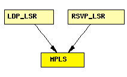

File: Network/MPLS/MPLS.ned
C++ definition: click here
Implements the MPLS protocol.
MPLS module is added between layer 2 and 3 in the OSI model for fast packet switching. MPLS should be transparent to signalling protocols. Signalling protocol currently implemented in this simulation is RSVP-TE.
Operations
MPLS packets are represented by the message class MPLSPacket. The local LIB (Label Information Base) is stored in a LIBTable module in the LSR.
For most of the time, the MPLS module will do the label swapping and message forwarding. Upon receiving a labelled packet from another LSR, the MPLS first extract the incoming interface and incoming label pair, and then look up the local LIB table. If an outgoing label and an outgoing interface can be found, the module will perform appropriate label operations (PUSH, POP, SWAP) based on the "outLabel" vector containing label and operation pairs.
Collaborations
MPLS module is required to interact with L2 (Link Layer) and L3 (Network Layer) in the OSI model. In addition, it needs to obtain label information from the LIB component and label query result from the LDP module. Messages the model communicates with L2 and Network Layers are L2 packets (PPP, Frame Relay, ATM, Ethernet, etc.), and IP native packets. Specifically, MPLS module encapsulates IP packet and is encapsulated in L2 packet. Different L2 protocols may require different methods of encapsulation to inherit the L2's QoS. This implementation follows a generic approach; it assumes no information of QoS from the link layer.
The following diagram shows usage relationships between modules, networks and channels. Unresolved module (and channel) types are missing from the diagram. Click here to see the full picture.
If a module type shows up more than once, that means it has been defined in more than one NED file.
| LDP_LSR | An LDP-capable router. |
| RSVP_LSR | An RSVP-TE capable router. |
| Name | Type | Description |
|---|---|---|
| classifier | string | a module which implements the IClassifier C++ interface |
| Name | Direction | Description |
|---|---|---|
| netwIn [ ] | input | |
| netwOut [ ] | output | |
| ifIn [ ] | input | |
| ifOut [ ] | output |
simple MPLS parameters: classifier : string; // a module which implements the IClassifier C++ interface gates: in: netwIn[]; out: netwOut[]; in: ifIn[]; out: ifOut[]; endsimple